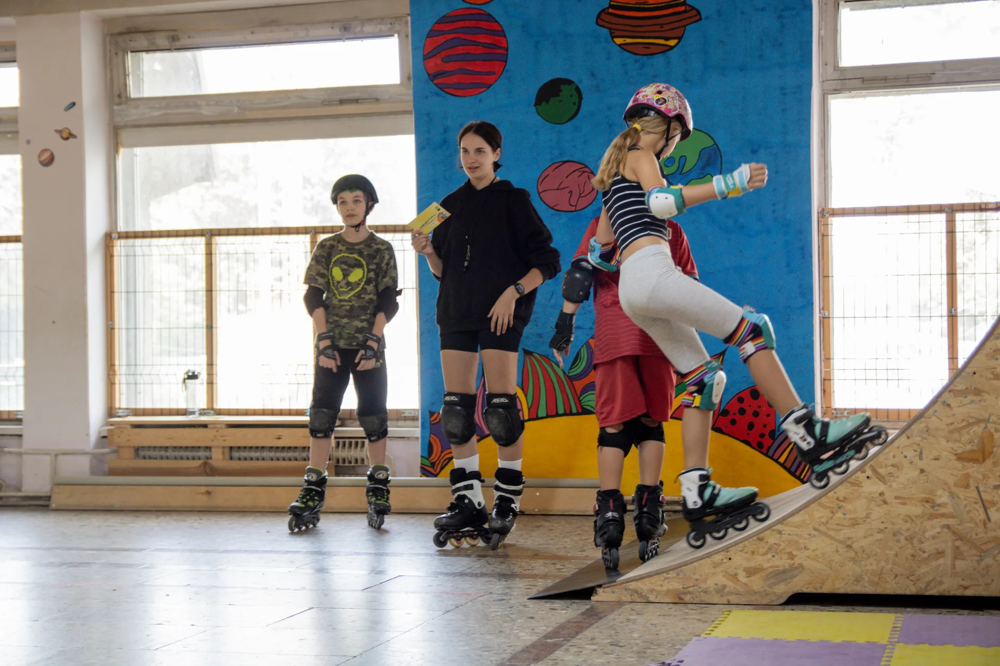
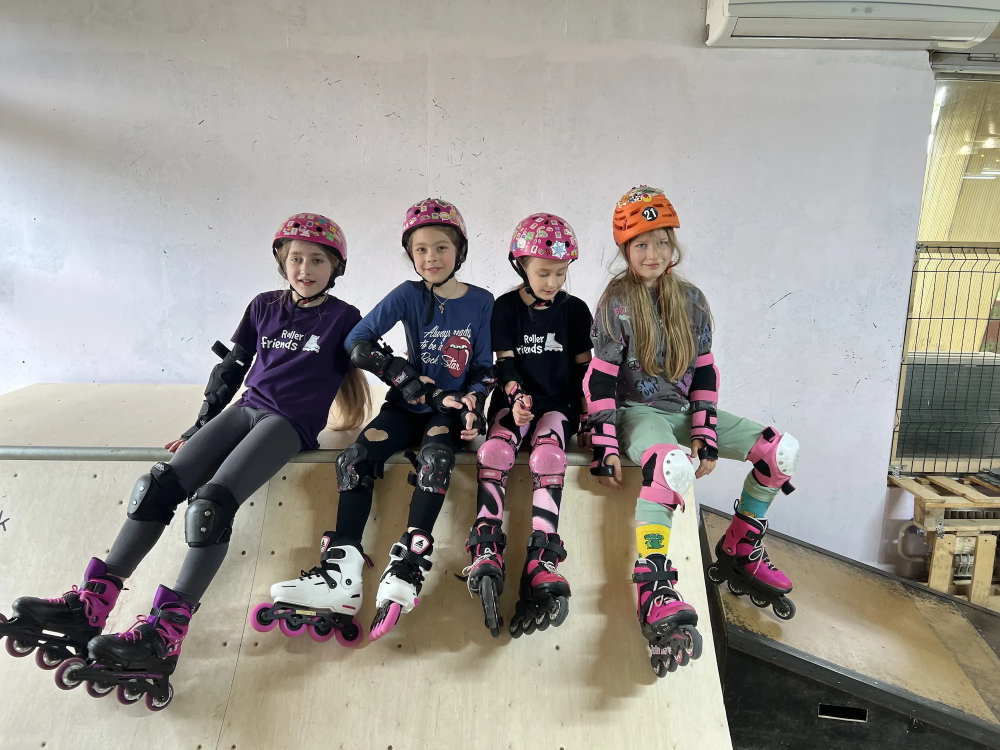
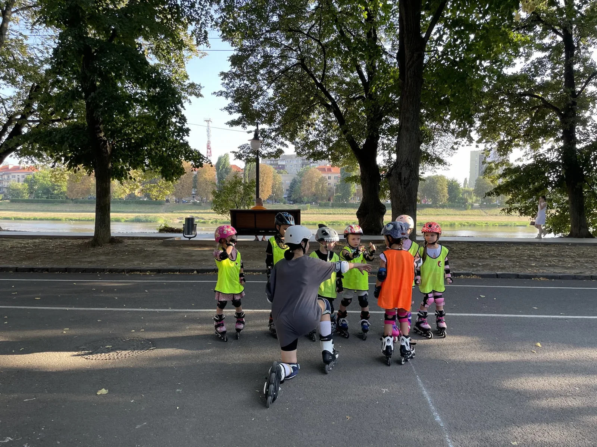
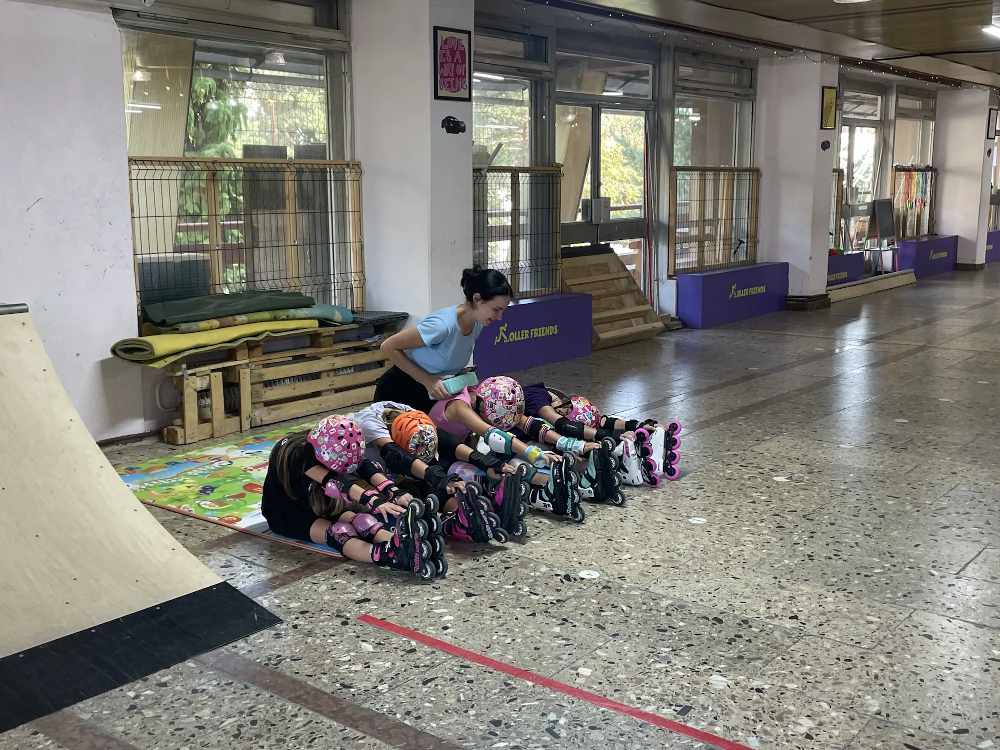
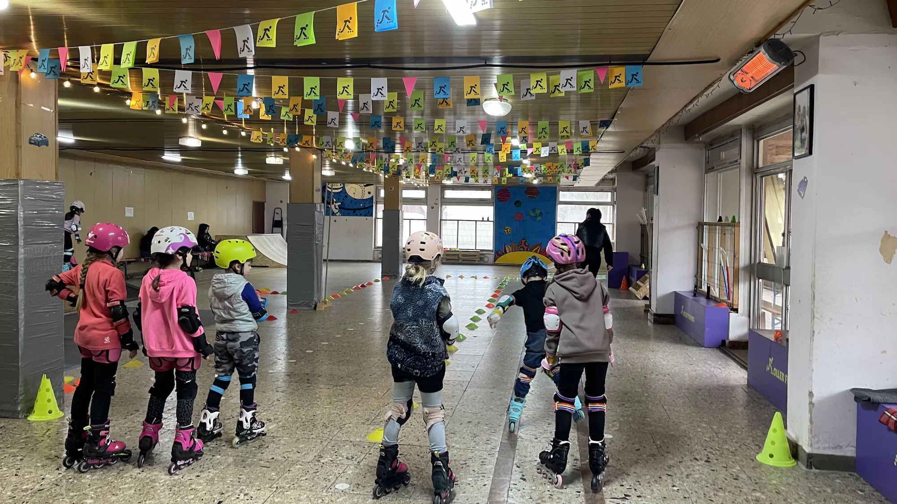

Команда · регулярність · розвиток
Групові тренування
Регулярні заняття для дітей і дорослих, спрямовані на розвиток техніки катання, фізичної підготовки, дисципліни та підготовку до змагань.
Разом сильніше
Користь групових тренувань
Заняття в групі допомагають дітям і дорослим розвиватися разом. Кількість учасників дозволяє проводити естафети, командні завдання та міні-змагання безпосередньо під час тренувань.
- Підтримувати регулярність і мотивацію.
- Розвивати координацію, рівновагу, реакцію та витривалість.
- Удосконалювати техніку катання.
- Вчитися дисципліні, взаємодії та роботі в команді.
- Ставати впевненішими у своїх можливостях.
- Отримувати досвід здорової конкуренції та підготовки до стартів.
Відкрити зміст сторінки
Як формуються групи
Вік важливий, але рівень підготовки, фізичні можливості та цілі учня також визначають найкращу групу.

Вік і рівень
Група, у якій комфортно розвиватися
Групи формуються з урахуванням віку та рівня підготовки учнів:
- 3–4 роки;
- 5–6 років;
- 7–9 років;
- 10–13 років;
- 14–18 років;
- 19+.
Вік є важливим, але не єдиним критерієм. Якщо рівень підготовки, фізичні можливості або цілі учня відрізняються від рівня групи, інструктор може рекомендувати перехід до іншої групи або додаткові індивідуальні тренування. Це також може бути необхідно під час підготовки до змагань.
Формат групи
Стабільний розклад, оптимальна кількість учасників і зрозумілий ритм тренувань.

Стабільний графік
Від 4 до 10 учнів
Група формується від 4 до 10 учнів, а час тренувань закріплюється за нею на постійній основі. Групові тренування можуть бути 2–3 рази на тиждень, тривалість групового тренування — 1 година. Якщо на окреме заняття приходить менше ніж чотири учасники, воно все одно проводиться та враховується як групове.
Якщо протягом 1–2 місяців групу регулярно відвідують лише 1–3 учні, школа може перевести її у формат мінігрупи або розформувати, запропонувавши учасникам інший доступний варіант занять.
Як потрапити до групи
Спочатку інструктор оцінює базові навички, а адміністратор підбирає доступний формат.

Перший крок
Оцінювання навичок і підбір групи
Запис до групи відбувається після попередніх індивідуальних тренувань. Інструктор оцінює базові навички та готовність учня, після чого адміністратор пропонує відповідну групу з урахуванням віку, рівня підготовки та наявності місць.
Якщо відповідної групи ще немає, може бути запропонований формат мінігрупи з 2–3 учнів із можливістю подальшого переходу до повноцінної групи.
Регулярність відвідування
Систематичні заняття допомагають рухатися разом із групою та зберігати стабільний прогрес.

Ритм і прогрес
Регулярність — одна з головних умов
Систематичне відвідування — одна з головних умов групових тренувань. Якщо учень планує займатися лише один раз на тиждень, приєднання до групи зазвичай не рекомендується, оскільки великі перерви можуть уповільнювати прогрес і створювати значну різницю між рівнями учасників.
За складного або змінного графіка адміністратор може розглянути ситуацію індивідуально та запропонувати іншу групу відповідної вікової категорії, додаткові індивідуальні заняття або комбінований графік.
Якщо учень часто пропускає тренування, інструктор може рекомендувати додаткові заняття, зміну групи або перегляд умов відвідування.
Як проходить тренування
Розминка, техніка, фізична підготовка, командні завдання та контроль прогресу.

Повноцінне заняття
Більше, ніж катання на роликах
Групове заняття — це не лише катання на роликах. Воно включає розминку, розтяжку, вправи на координацію та фізичну підготовку, вивчення елементів, виправлення техніки, розбір помилок, естафети й тренувальні заїзди.
Інструктор розподіляє увагу між усіма учасниками, дає завдання, контролює їх виконання та оцінює прогрес. Груповий формат не передбачає, що одному учневі приділятиметься більше часу, ніж іншим.
Запізнення та дисципліна
Розклад, правила безпеки й повага до команди допомагають заняттю бути ефективним.

Повага до команди
Тренування починається за розкладом
Тренування починається і завершується відповідно до розкладу. У разі запізнення заняття не продовжується, а окремий час для учня не виділяється. Перед основним навантаженням учень повинен самостійно виконати розминку, розтяжку та базові вправи для підготовки м’язів і суглобів.
Учасники повинні виконувати вказівки інструктора, дотримуватися правил безпеки, не заважати іншим і бережно ставитися до майна школи. Якщо учень систематично порушує дисципліну та не реагує на попередження, інструктор може звернутися до батьків. Якщо ситуація не змінюється, школа може призупинити або припинити його участь у групових тренуваннях.
Абонементи
Зручний формат для регулярних занять і можливість заощадити на тренуваннях.
Для регулярних занять
Тренуйтеся системно
Для регулярного відвідування можна придбати груповий абонемент і заощадити на тренуваннях. Види абонементів, строки дії та повні умови використання представлені в розділі «Абонементи» на нашому сайті.